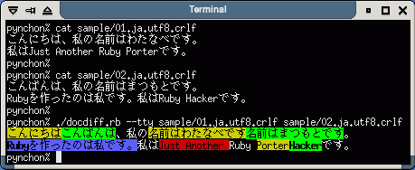
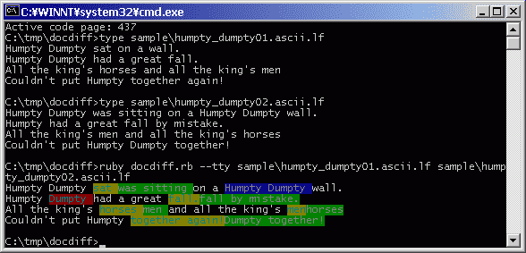
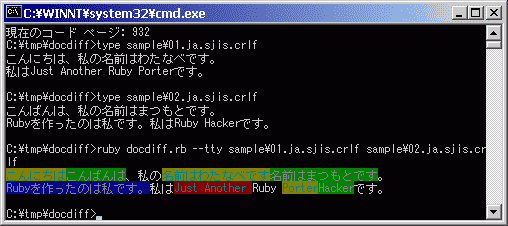

Summary 概要
DocDiff compares two text files and shows the difference. It can compare files by word, character, or line. It has several output formats such as HTML, tty, Manued, or user-defined markup. DocDiffは2つのテキストファイルを比較してその違いを表示します。単語ごと、文字ごと、そして行ごとにファイルを比較できます。結果を出力する形式は、HTML, tty（文字 端末向けのエスケープシーケンス）, Manued（真鵺道という校正用のマークアップ形式）などが用意されており、ユーザ定義のタグを使うこともできます。
It supports several encodings and end-of-line characters, including ASCII (and ISO-8859-*), UTF-8, EUC-JP, Shift_JIS, CR, LF, and CRLF. 次のエンコーディング（文字コード）と行末コード（改行文字）をサポートしています: ASCII（およびISO-8859-*), UTF-8, EUC-JP, Shift_JIS、そしてCR, LF, CRLF.
Screenshot スクリーンショット
Screenshots as of version 0.3.2. All shots are in the img directory. バージョン0.3.2時点のスクリーンショットです。スクリーンショットはimgディレクトリにあります。
HTML output in web browser

HTML output in web browser (digest)

tty output in terminal

tty output in terminal (comparing Japanese text)

tty output in terminal

tty output in terminal (comparing Japanese text)
Comparing English text (codepage 437) on Windows (Cygwin)
Comparing Japanese text (codepage 932) on Windows (Cygwin)
You can compare text files by line, word, or character (format: tty)

Document ドキュメント
- readme.html (Multilingual)
- readme.en.html (English)
- readme.ja.html (Japanese)
Download ダウンロード
Please read the readme before you download. ダウンロードする前にreadmeをお読みください。